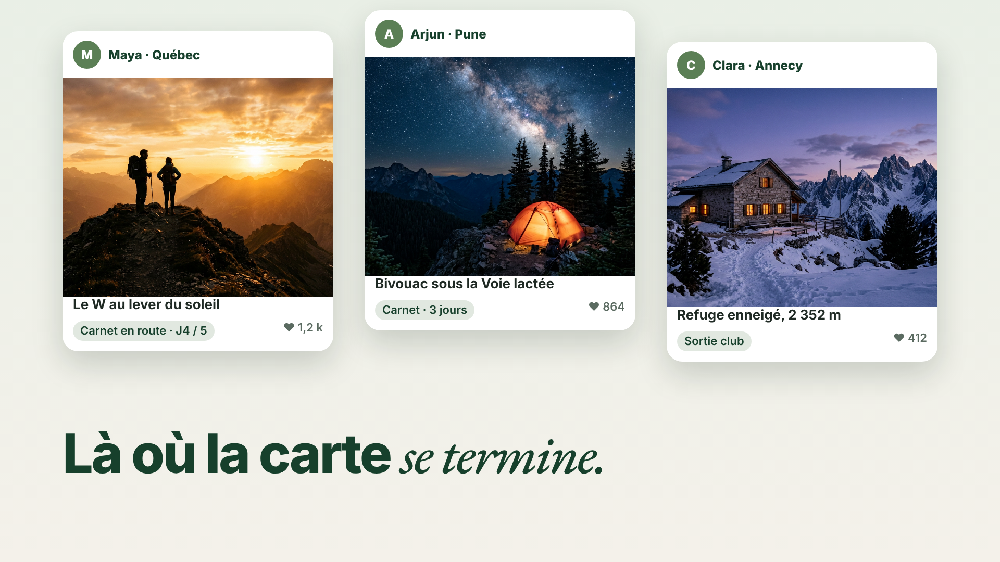
01: Là où la carte se termine
0 à 3,75 s
Cartes photo de voyage sur le temps ; la phrase d'accueil du site se pose mot à mot.
À lire « Là où la carte » (0,3-1,6 s) ; « se termine. » (1,6-3,5 s)
Son piste calme ; aucun effet
Source trailer, plan 1 (Accueil `/`)
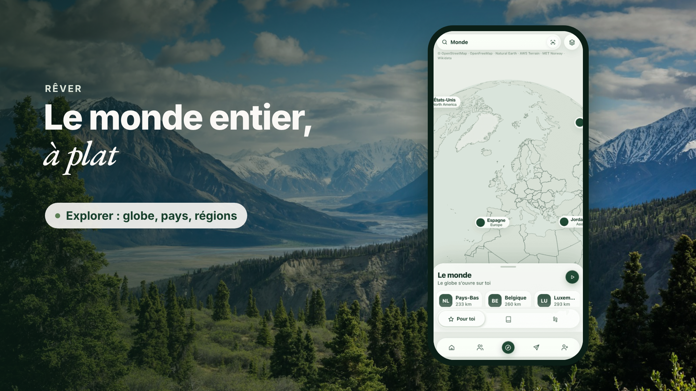
02: Rêver
3,75 à 5,62 s
La dernière photo devient le globe d'Explorer ; il tourne et s'aplatit sur l'Europe.
À lire « Rêver » (0,2-0,8 s) ; le globe Explorer (0,4-1,8 s)
Son whoosh doux sur la transition
Source 📷 docs/explorer-v2/preuves/screens/Monde.png
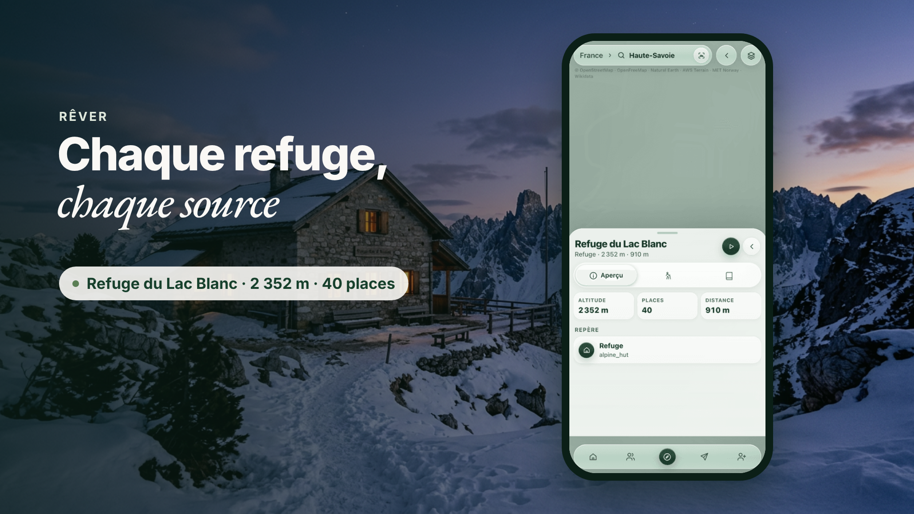
03: Refuges et points d'eau
5,62 à 7,5 s
Zoom sur une région : calques refuges, points d'eau, sommets ; la fiche « Refuge du Lac Blanc » s'ouvre.
À lire la fiche refuge (0,3-1,8 s)
Son pop sur la fiche
Source 📷 Refuge.png, Calques.png
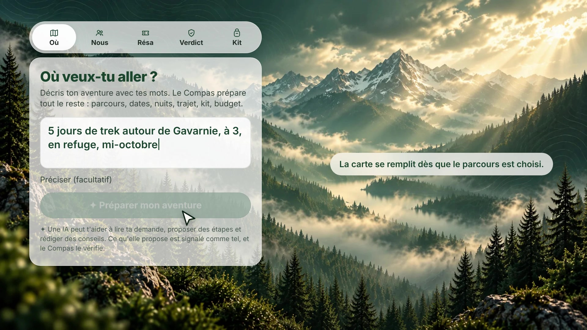
04: Une phrase
7,5 à 9,38 s
Compas « Où veux-tu aller ? » : la phrase se tape ; clic « Préparer mon aventure » sur le temps 9,3.
À lire la phrase tapée (0,2-1,4 s) ; le bouton (1,4-1,8 s)
Son frappe ; clic ; montée vers l'ouverture de la piste
Source 📷 docs/compas/preuves/compas-vide-1280x800.jpg (reconstruit)

05: Voici ce que j'ai compris capture à faire
9,38 à 11,25 s
La musique s'ouvre ; la phrase se range en lignes « Voici ce que j'ai compris », la préparation visible coche ses étapes.
À lire six lignes, une par temps (0,1-1,8 s)
Son la piste s'ouvre ; pop discret par ligne
Source libellés `compas-steps.fr.ts` (understood.*) ; ❌ capture à faire
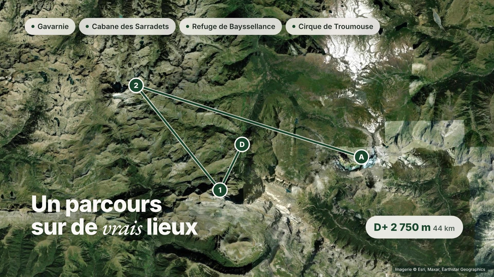
06: Un parcours réel
11,25 à 14,06 s
Vol satellite jusqu'à Gavarnie, tracé D → 1 → 2 → A, « D+ 2 750 m · 44 km ».
À lire « sur de vrais lieux » (0,4-1,6 s) ; le tracé (1,2-2,4 s) ; D+ (2,2-2,8 s)
Son whoosh cinématique ; pops des étapes
Source carte cuite (Esri) + jeu de démo du Compas
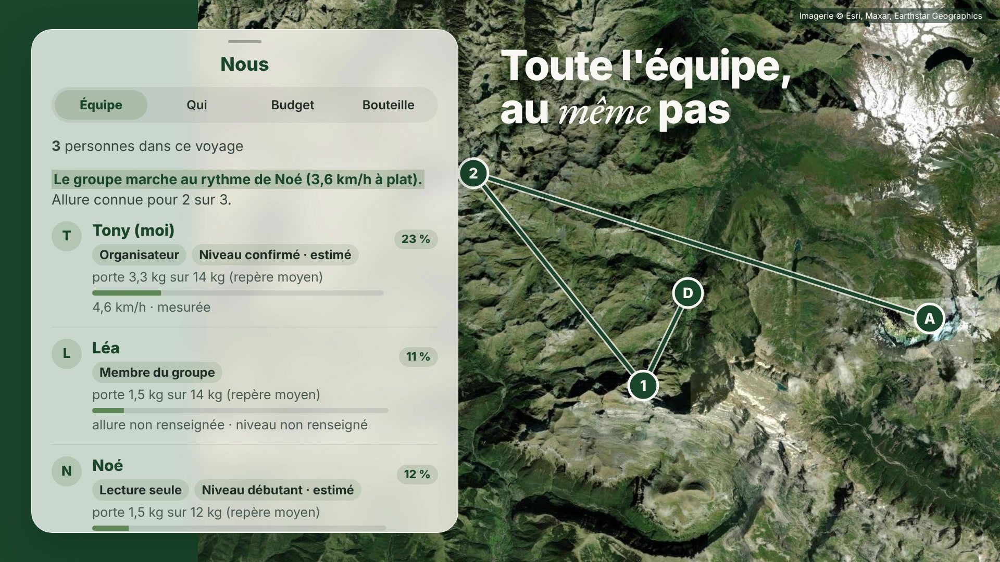
07: Nous
14,06 à 15,94 s
Panneau « Nous » : rythme du groupe (« au rythme de Noé »), charges, puis « Qui doit quoi ».
À lire « Le groupe marche au rythme de Noé » (0,3-1,8 s)
Son whoosh court du panneau
Source 📷 docs/compas/preuves/compas-1280x800-equipe.jpg
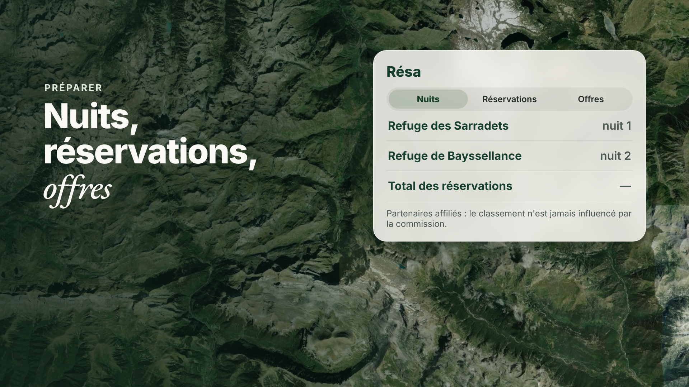
08: Résa capture à faire
15,94 à 17,81 s
Onglet « Résa » : nuits par étape, réservations, offres partenaires avec la mention d'honnêteté.
À lire les trois onglets (0,2-0,8 s) ; la mention partenaires (0,8-1,8 s)
Son clic d'onglet
Source libellés `compas-screen.fr.ts`, `compas-sheets.fr.ts` ; ❌ capture à faire ; montants à prendre dans un vrai voyage
09: Verdict capture à faire
17,81 à 19,69 s
Les trois axes s'allument ; la météo MET Norway et les alertes officielles passent ; l'état bascule.
À lire les trois axes (0,2-1,2 s) ; « sans score » (1,2-1,8 s)
Son pop par axe
Source libellés `compas-screen.fr.ts` (verdict*, axis*, level*) ; ❌ capture à faire ; états illustratifs
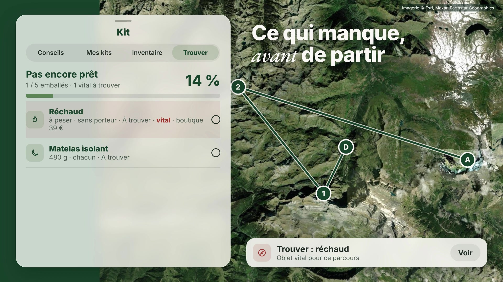
10: Le kit
19,69 à 21,56 s
« Pas encore prêt · 14 % » ; la ligne « Réchaud · vital » s'allume ; « Trouver : réchaud ».
À lire « 14 % » (0,2-0,8 s) ; « Trouver : réchaud » (0,8-1,8 s)
Son clic
Source 📷 docs/compas/preuves/compas-1280x800-tiroir.jpg

11: Kit Studio
21,56 à 25,31 s
PAYOFF 1 : le vrai sac 3D tourne, change de coloris sur les mesures, reçoit ses modules.
À lire « Ton sac, pièce par pièce » (0,4-1,6 s) ; coloris (1,9 / 2,8 s) ; modules (3,0-3,6 s)
Son whoosh ; clics des modules
Source maillages `public/assets/bags|modules/*.glb` ; 📷 docs/kit-studio/captures
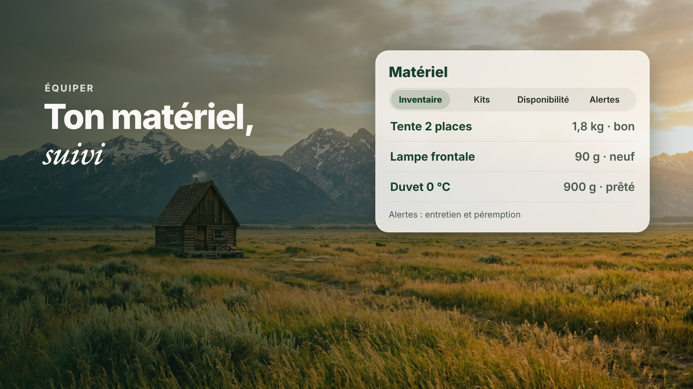
12: Matériel capture à faire
25,31 à 27,19 s
Hub « possession » : inventaire pesé, prêts (« Disponibilité »), alertes d'entretien.
À lire les quatre onglets (0,2-0,8 s) ; un objet prêté (0,8-1,8 s)
Son clic
Source `hubSectionRegistry.ts` ; objets du jeu de démo ; ❌ capture à faire
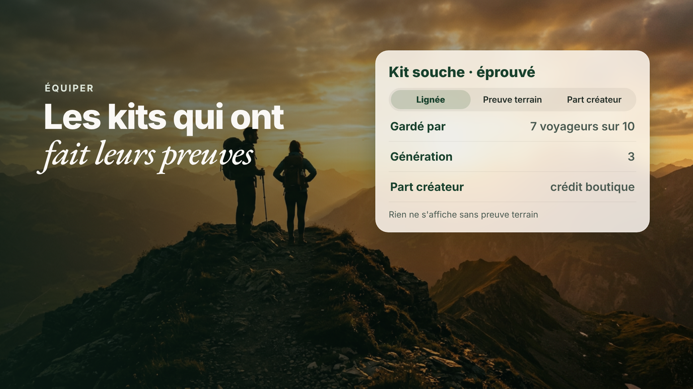
13: Lignée de kit capture à faire
27,19 à 29,06 s
Un kit forké de génération en génération ; « gardé par X voyageurs sur 10 » ; la part créateur.
À lire « gardé par 7 voyageurs sur 10 » (0,3-1,8 s)
Son pop
Source vocabulaire CLAUDE.md (lignées) ; chiffres illustratifs ; ❌ capture à faire
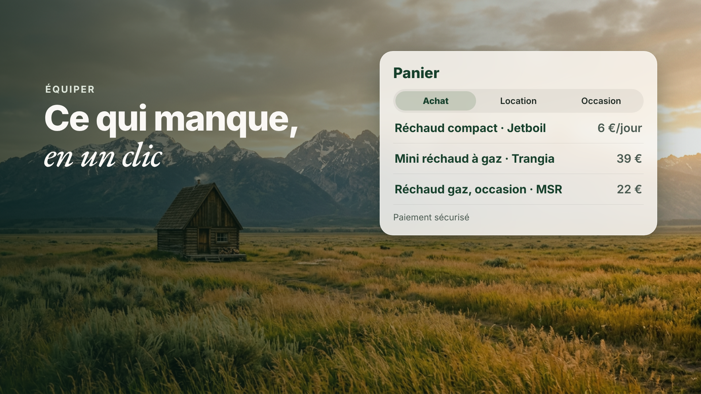
14: Panier capture à faire
29,06 à 30,94 s
Le réchaud manquant arrive au panier : achat, location ou occasion ; paiement.
À lire trois offres (0,2-1,4 s)
Son clic
Source offres du jeu de démo (`labData.ts`) ; ❌ capture panier à faire
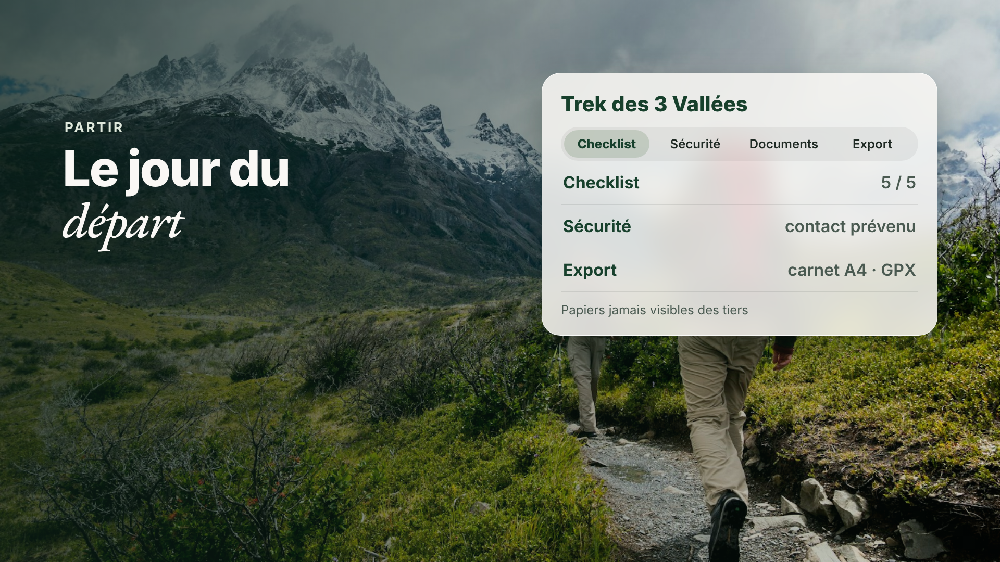
15: Départ capture à faire
30,94 à 32,81 s
Hub du voyage : checklist, sécurité, documents privés, export A4 et GPX.
À lire les quatre onglets (0,2-1,0 s) ; « GPX » (1,0-1,8 s)
Son clic
Source `hubSectionRegistry.ts` ; ❌ capture à faire
16: Hors ligne
32,81 à 34,69 s
« Hors ligne » : la zone se télécharge (tuiles, zoom 10 → 15).
À lire « Télécharger cette zone » (0,3-1,8 s)
Son pop
Source 📷 docs/explorer-v2/preuves/hors-ligne.png
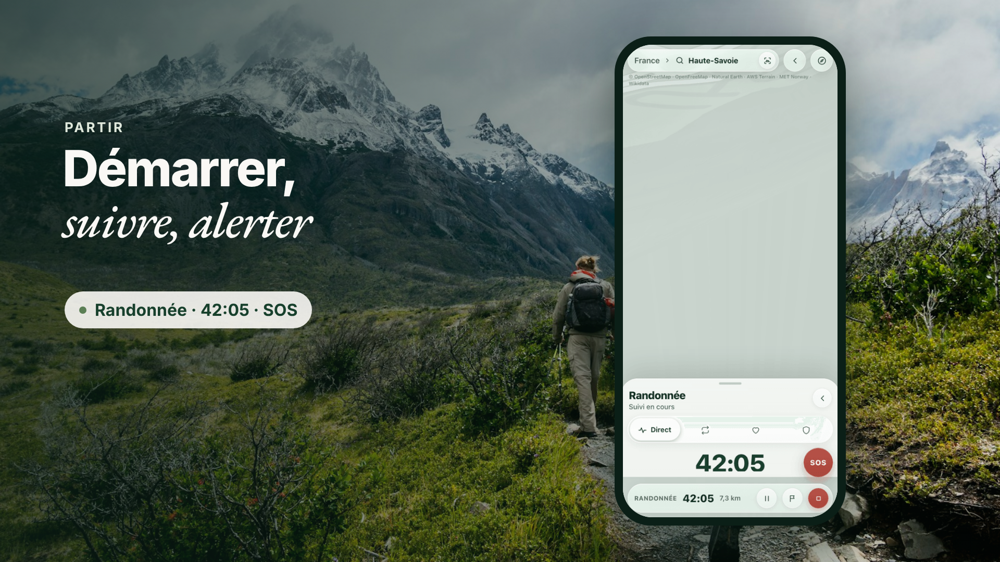
17: Sur le sentier
34,69 à 37,5 s
« Démarrer » (randonnée, trail, vélo, kayak, ski…) → chrono en direct → bouton SOS.
À lire le chrono (0,4-1,8 s) ; « SOS » (1,8-2,8 s)
Son clic ; tic du chrono
Source 📷 Demarrer.png, RandoLive.png, SOS.png
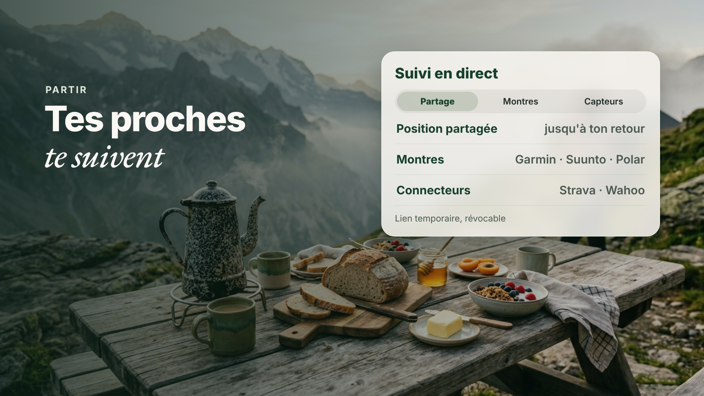
18: Suivi en direct capture à faire
37,5 à 39,38 s
Lien de suivi en direct partagé ; montres et capteurs connectés.
À lire « Position partagée » (0,2-1,0 s) ; les marques (1,0-1,8 s)
Son pop
Source `/live/[token]`, `/compte/montres|sensors|connecteurs` ; ❌ capture à faire ; marques selon les clés posées
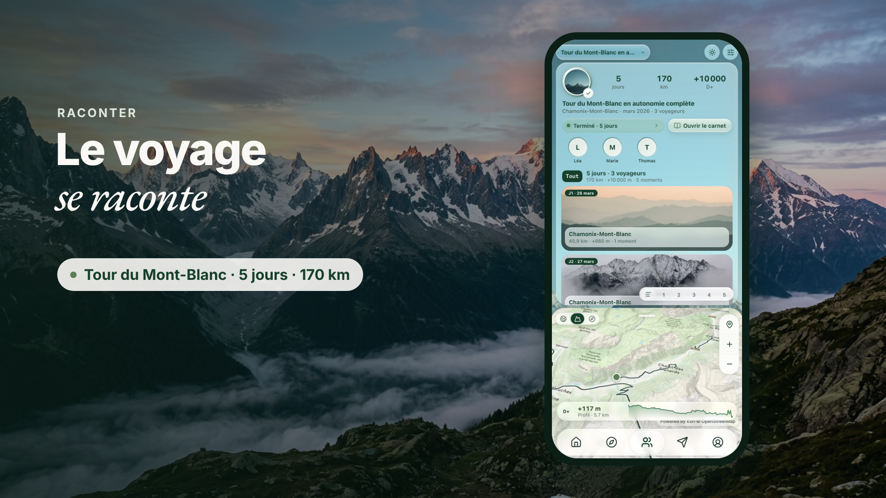
19: Carnet de bord
39,38 à 43,12 s
PAYOFF 2 : le carnet défile — jours, trace, chiffres (D+, distance), fil de bord (moments, nature, rencontres).
À lire « Raconte. » (0,2-1,0 s) ; chiffres (1,0-2,4 s) ; moments (2,4-3,6 s)
Son whoosh doux
Source 📷 docs/audit/carnet-drawers-2026-11-11/prod3/*
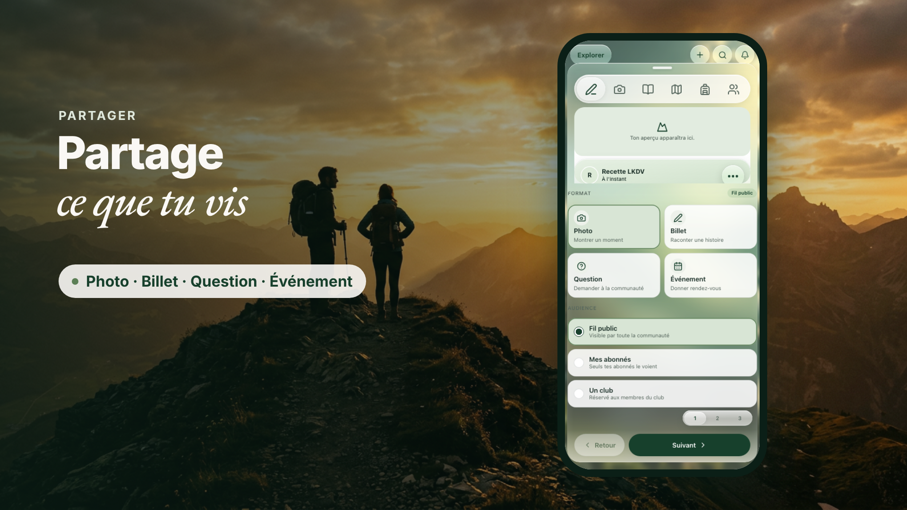
20: Communauté
43,12 à 45 s
Fil de la communauté, stories et reels ; création d'une publication.
À lire les quatre types (0,3-1,8 s)
Son pop
Source 📷 docs/audit/communaute-v2-2026-11-08/**
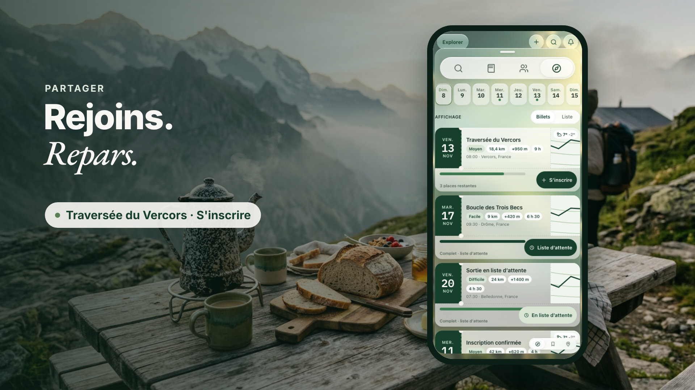
21: Clubs et sorties
45 à 46,88 s
Clubs (« Vercors Alpin ») et sorties de l'agenda ; « S'inscrire ».
À lire « S'inscrire » (0,6-1,8 s)
Son clic
Source 📷 explorer-sorties.png, explorer-clubs.png
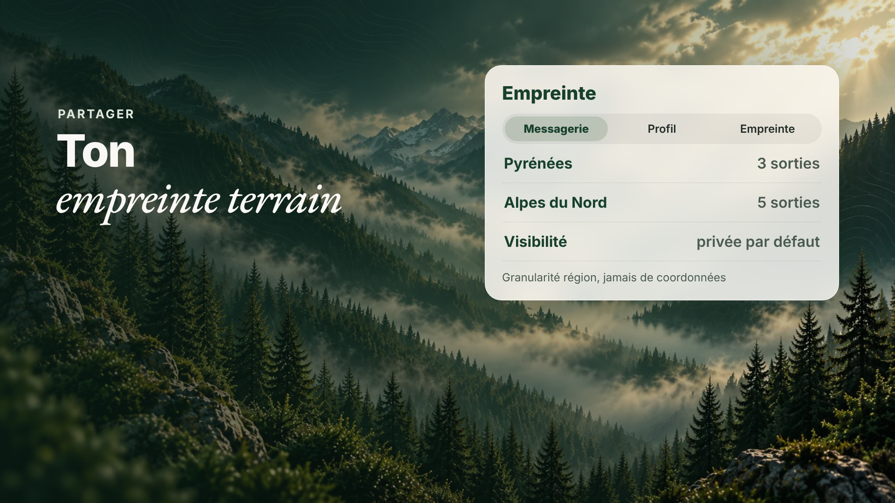
22: Messagerie et empreinte capture à faire
46,88 à 48,75 s
Messagerie entre voyageurs ; l'empreinte terrain (sceau), privée par défaut.
À lire « privée par défaut » (0,8-1,8 s)
Son pop
Source `user_field_signature`, `FieldSeal` ; ❌ capture à faire ; régions illustratives
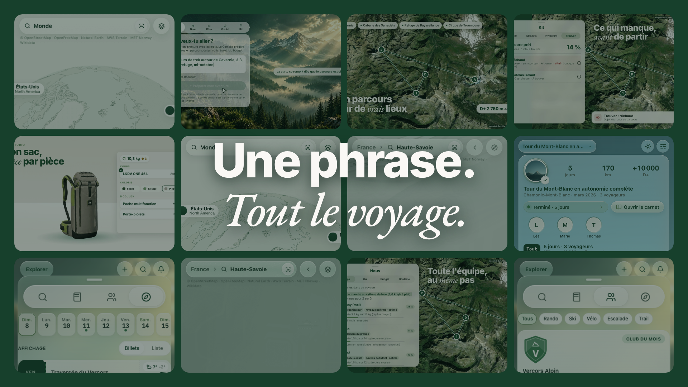
23: Tout le voyage
48,75 à 52,5 s
Tous les écrans du film se rangent en mur puis se resserrent en un seul point : le claim se pose.
À lire « Une phrase. » (0,4-1,4 s) ; « Tout le voyage. » (1,4-3,6 s)
Son montée
Source écrans des plans précédents
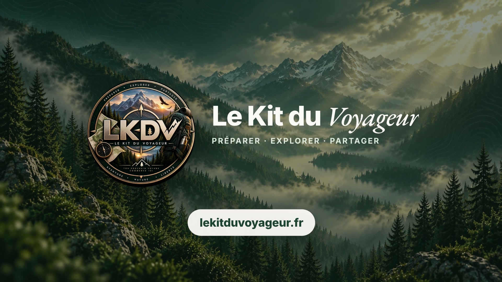
24: LKDV
52,5 à 60 s
Le badge arrive comme une boussole qui se cale ; « Le Kit du Voyageur », « Préparer · Explorer · Partager » ; web, iOS, Android ; lekitduvoyageur.fr.
À lire le badge (0,0-1,0 s) ; le nom (1,0-2,4 s) ; l'adresse (2,4-7,5 s)
Son impact sous le badge ; fondu de fin 1,5 s
Source `public/logo.png` ; adresse à confirmer